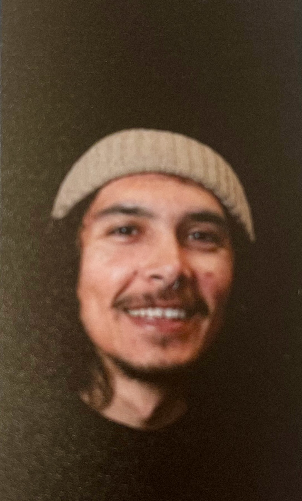
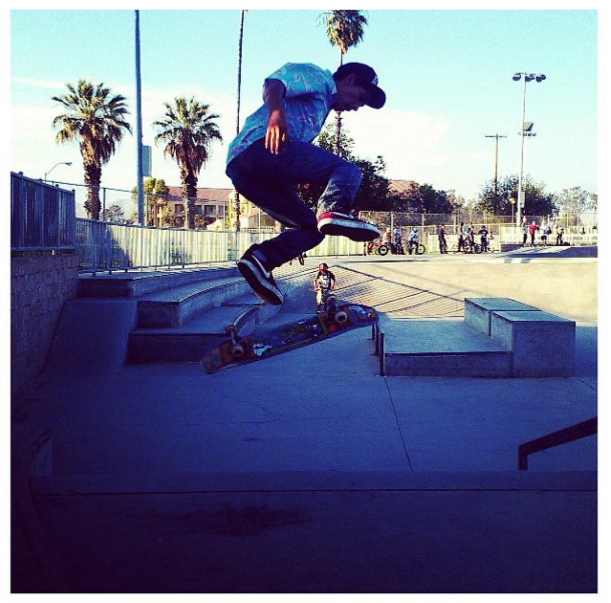

 I am currently 28 years old, born March 17th on St Patrick day 1995. I was raised in Californa, now living in Arizona for about two years. With the move, I brought 4 animals with me, two dogs and two tortoises. I relocated out here for an opportunity with Amazon to be a part of the Cental Flow team for the launch of Central Dock as a virtual ship clerk.
 My first hobby as a kid was riding motorcycles. As a family, we would take trips up to Glamis in Imperial County, California. Another popular spot for us for was Pismo Beach. It's a nice area to ride and go to the beach at the same time. I just have one bad memory there, around 11 years old, I was hit a by dune buggy. I was riding my dirt bike, which was not that fast in the dunes since the sand there is a bit softer. I was trying to turn away and the dune buggy was going too fast to stop for me. It happened so fast, I don't remember the pain, just scences of the accident. Nothing really major happened, to me just a couple of bruises and all my gear ripped up. Another hobby of mine is skateboarding. I started skateboarding around 15 years old. I remember getting my first real skateboard from this skate shop in town. I stayed in the backyard for hours practing all the skateboad tricks I knew. Back then, being outside in the front yard was a big deal. Once I got comfortable riding my skateboard, it was on. Some of my favorite things to do when skating is dropping in on ramps and ollies over stairs. My last and most active hobby I do right now is gaming. I was not gaming as much when I was a kid since I had those other hobbies, but man do I love gaming now. My favorite games right now are Fortnite and Overwatch 2. Both games are very competitive.
Starting my career at Amazon being a virtual shipclerk really opened my eyes to the opportunity of the future. Being able to work from home and working with all these automated tools peaked my interested in the tech field. Now with being with Amazon for four plus years, I got the opportunity to attend an academy for Web Delevelopment at Fullstack Academy. My plan for the future is to land a career within Amazon in the tech field after graduating at Fullstack Adacademy.